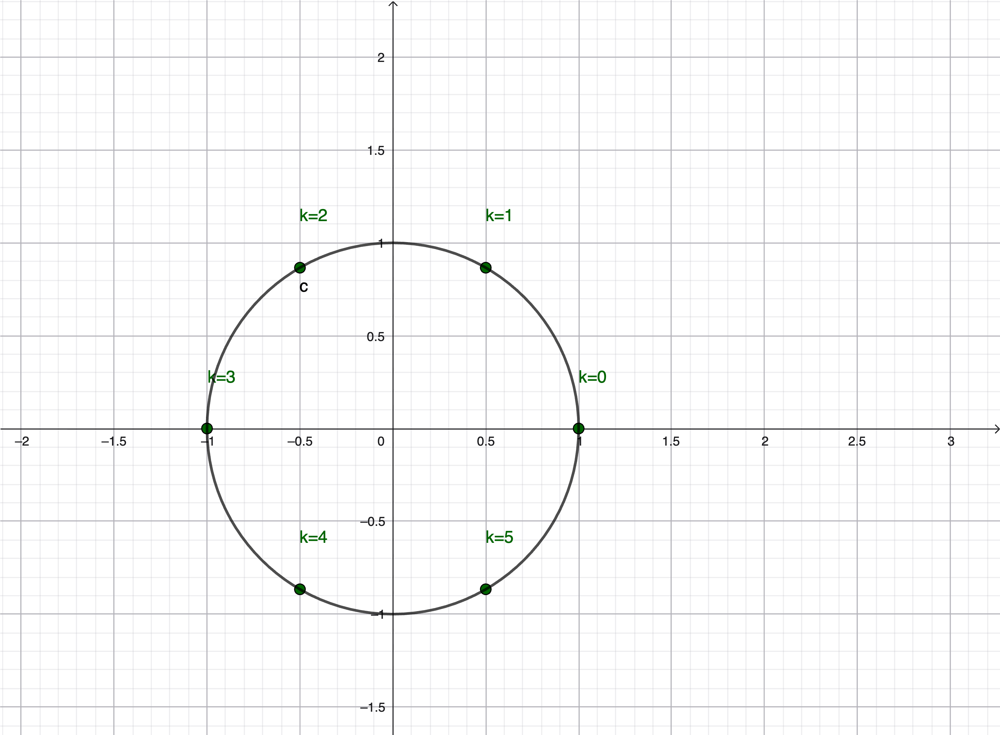

MIT 18.06 Lecture 26: Complex Matrices and Fast Fourier Transform
This lecture extends linear algebra to complex vectors and matrices, introducing key concepts like Hermitian matrices and unitary matrices. The highlight is the Fast Fourier Transform (FFT), which exploits the recursive structure of Fourier matrices to reduce complexity from \(O(N^2)\) to \(O(N\log N)\).
Complex Vectors and Inner Products
Length of Complex Vectors
For a vector \(z \in \mathbb{C}^n\), the length is defined using the conjugate transpose:
\[ \|z\|^2 = \bar{z}^{\top}z = \begin{bmatrix}\bar{z}_1 & \bar{z}_2 & \cdots & \bar{z}_n\end{bmatrix}\begin{bmatrix}z_1 \\ z_2 \\ \vdots \\ z_n\end{bmatrix} = \sum_{i=1}^n \bar{z}_i z_i = \sum_{i=1}^n |z_i|^2 \]
Why conjugate? For complex numbers, \(\bar{z}_i z_i = |z_i|^2\) is always real and non-negative. Without the conjugate, we would get \(z_i z_i = z_i^2\), which can be complex or negative.
Example:
\[ z = \begin{bmatrix}1 + i \\ 2 - i\end{bmatrix} \]
\[ \|z\|^2 = (1-i)(1+i) + (2+i)(2-i) = (1 + 1) + (4 + 1) = 2 + 5 = 7 \]
Hermitian Matrices
Definition
A matrix \(A\) is Hermitian if it equals its conjugate transpose:
\[ A^H = \bar{A}^{\top} = A \]
where \(A^H\) denotes the Hermitian transpose (also called conjugate transpose).
Hermitian matrices are the complex analog of symmetric matrices.
Example
\[ A = \begin{bmatrix}2 & 3+i \\ 3-i & 5\end{bmatrix} \]
Check:
\[ A^H = \overline{A^{\top}} = \overline{\begin{bmatrix}2 & 3-i \\ 3+i & 5\end{bmatrix}} = \begin{bmatrix}2 & 3+i \\ 3-i & 5\end{bmatrix} = A \]
Key property: The diagonal entries of a Hermitian matrix must be real, because \(\bar{a}_{ii} = a_{ii}\) implies \(a_{ii} \in \mathbb{R}\).
Properties of Hermitian Matrices
Just like real symmetric matrices, Hermitian matrices have: - Real eigenvalues - Orthogonal (unitary) eigenvectors - Spectral decomposition: \(A = Q\Lambda Q^H\)
Unitary Matrices
Definition
A matrix \(Q\) is unitary if its conjugate transpose equals its inverse:
\[ Q^H = Q^{-1} \]
or equivalently:
\[ Q^HQ = I \]
Unitary matrices are the complex analog of orthogonal matrices.
Properties
- Columns are orthonormal under the complex inner product: \(q_i^H q_j = \delta_{ij}\)
- Preserve length: \(\|Qx\| = \|x\|\) for all \(x\)
- Preserve angles: The inner product \(\langle Qx, Qy \rangle = \langle x, y \rangle\)
The Fourier Matrix
The Fourier matrix \(F_n\) is one of the most important matrices in applied mathematics.
General Form
\[ F_n = \begin{bmatrix} 1 & 1 & 1 & \cdots & 1 \\ 1 & w & w^2 & \cdots & w^{n-1} \\ 1 & w^2 & w^4 & \cdots & w^{2(n-1)} \\ \vdots & \vdots & \vdots & \ddots & \vdots \\ 1 & w^{n-1} & w^{2(n-1)} & \cdots & w^{(n-1)^2} \end{bmatrix} \]
where:
\[ w = e^{-i\frac{2\pi}{n}} \]
The general entry is:
\[ (F_n)_{i,j} = w^{ij}, \quad i,j = 0, 1, \ldots, n-1 \]
The nth Roots of Unity
The key to the Fourier matrix is \(w = e^{-i\frac{2\pi}{n}}\), which is a primitive nth root of unity:
\[ w^n = e^{-i2\pi} = 1 \]
Geometric interpretation: The powers \(\{1, w, w^2, \ldots, w^{n-1}\}\) are equally spaced points on the unit circle in the complex plane, rotating clockwise at angles \(-\frac{2\pi k}{n}\) for \(k = 0, 1, \ldots, n-1\).

The six points shown here are the 6th roots of unity—the complex numbers whose 6th power equals 1. They sit on the unit circle at angles \(2\pi k / 6\). For the DFT, we use \(w = e^{-i2\pi/n}\), which rotates clockwise. These rotations are exactly the numbers used as entries of the Fourier matrix \(F_n\). The DFT is built from these unit roots: every row is a different power of the same rotation \(w_n = e^{-i2\pi/n}\). This is the algebraic heart of the Fast Fourier Transform.
Example: \(F_4\) (4×4 Fourier Matrix)
When \(n = 4\):
\[ w = e^{-i\frac{2\pi}{4}} = e^{-i\frac{\pi}{2}} = \cos\left(-\frac{\pi}{2}\right) + i\sin\left(-\frac{\pi}{2}\right) = -i \]
Powers of \(-i\): - \((-i)^0 = 1\) - \((-i)^1 = -i\) - \((-i)^2 = -1\) - \((-i)^3 = i\) - \((-i)^4 = 1\) (cycle repeats)
The Fourier matrix becomes:
\[ F_4 = \begin{bmatrix} 1 & 1 & 1 & 1 \\ 1 & -i & (-i)^2 & (-i)^3 \\ 1 & (-i)^2 & (-i)^4 & (-i)^6 \\ 1 & (-i)^3 & (-i)^6 & (-i)^9 \end{bmatrix} = \begin{bmatrix} 1 & 1 & 1 & 1 \\ 1 & -i & -1 & i \\ 1 & -1 & 1 & -1 \\ 1 & i & -1 & -i \end{bmatrix} \]
Orthogonality of Columns
The columns of the Fourier matrix are orthogonal under the complex inner product.
Verification: For columns \(c_i\) and \(c_j\) with \(i \neq j\), we compute:
\[ \bar{c}_i^{\top}c_j = \sum_{k=0}^{n-1} \overline{w^{ki}} \cdot w^{kj} = \sum_{k=0}^{n-1} w^{-ki} \cdot w^{kj} = \sum_{k=0}^{n-1} w^{k(j-i)} \]
This is a geometric series with ratio \(w^{j-i}\) where \(j - i \neq 0 \pmod{n}\):
\[ \sum_{k=0}^{n-1} w^{k(j-i)} = \frac{1 - w^{n(j-i)}}{1 - w^{j-i}} = \frac{1 - (w^n)^{j-i}}{1 - w^{j-i}} = \frac{1 - 1}{1 - w^{j-i}} = 0 \]
Therefore, all columns are orthogonal.
Normalization
Each column has length \(\sqrt{n}\) because:
\[ \|c_i\|^2 = \sum_{k=0}^{n-1} |w^{ki}|^2 = \sum_{k=0}^{n-1} 1 = n \]
To make the matrix unitary (orthonormal columns), we normalize:
\[ F_n^{\text{normalized}} = \frac{1}{\sqrt{n}}F_n \]
For \(F_4\):
\[ F_4 = \frac{1}{2}\begin{bmatrix} 1 & 1 & 1 & 1 \\ 1 & -i & -1 & i \\ 1 & -1 & 1 & -1 \\ 1 & i & -1 & -i \end{bmatrix} \]
Inverse of the Fourier Matrix
Since the normalized Fourier matrix is unitary:
\[ F_n^H F_n = I \]
Therefore:
\[ F_n^{-1} = F_n^H \]
Key insight: The inverse Fourier transform is just the conjugate transpose, which corresponds to replacing \(w\) with \(\bar{w} = w^{-1}\) (rotating in the opposite direction).
Discrete Fourier Transform (DFT)
Definition
Given a vector \(x = (x_0, x_1, x_2, \ldots, x_{N-1})\), the Discrete Fourier Transform computes:
\[ y_k = \sum_{n=0}^{N-1} x_n e^{-i2\pi kn / N}, \quad k = 0, 1, \ldots, N-1 \]
Matrix form:
\[ y = F_N x \]
Complexity: Direct computation requires \(O(N^2)\) operations (each of \(N\) output values requires summing \(N\) terms).
Why DFT Matters
The DFT decomposes a signal into its frequency components: - \(y_0\) = DC component (average value) - \(y_k\) = amplitude and phase of frequency \(k/N\)
This is fundamental in signal processing, audio compression, image processing, and solving PDEs.
Fast Fourier Transform (FFT)
The Fast Fourier Transform is an algorithm that computes the DFT in \(O(N\log N)\) time instead of \(O(N^2)\).
Key Connection: Squaring Roots of Unity
If we square \(w_n = e^{i2\pi/n}\), we get \(w_{n/2}\):
\[ w_n^2 = e^{i2\pi/n} \cdot e^{i2\pi/n} = e^{i4\pi/n} = e^{i2\pi/(n/2)} = w_{n/2} \]
Examples: - \(w_{64}^2 = w_{32}\) - \(w_{32}^2 = w_{16}\) - \(w_{16}^2 = w_8\) - \(w_8^2 = w_4\) - \(w_4^2 = w_2\) - \(w_2^2 = w_1 = 1\)
This recursive relationship is the foundation of the FFT.
Even-Odd Split
For an \(N\)-point DFT, split the input into even-indexed and odd-indexed elements.
Example with \(N = 8\):
Original DFT:
\[ Y_k = \sum_{n=0}^{7} x_n e^{-i2\pi kn/8} \]
Split into even and odd:
\[ Y_k = \sum_{m=0}^{3} x_{2m} e^{-i2\pi k(2m)/8} + \sum_{m=0}^{3} x_{2m+1} e^{-i2\pi k(2m+1)/8} \]
Simplify even terms:
\[ E_k = \sum_{m=0}^{3} x_{2m} e^{-i2\pi km/4} \]
This is a 4-point DFT of the even-indexed elements.
Simplify odd terms:
\[ \sum_{m=0}^{3} x_{2m+1} e^{-i2\pi k(2m+1)/8} = e^{-i2\pi k/8} \sum_{m=0}^{3} x_{2m+1} e^{-i2\pi km/4} \]
\[ O_k = \sum_{m=0}^{3} x_{2m+1} e^{-i2\pi km/4} \]
This is a 4-point DFT of the odd-indexed elements.
Combine:
\[ Y_k = E_k + e^{-i2\pi k/N} O_k \]
The Second Half: \(Y_{k+N/2}\)
For the second half of outputs, we use the periodicity and symmetry:
\[ Y_{k+N/2} = E_k - e^{-i2\pi k/N} O_k \]
Why the sign change?
\[ e^{-i2\pi(k+N/2)/N} = e^{-i2\pi k/N} \cdot e^{-i\pi} = -e^{-i2\pi k/N} \]
Key insight: The even part \(E_k\) is periodic with period \(N/2\), so \(E_{k+N/2} = E_k\). The odd part picks up a minus sign due to the rotation by \(\pi\).
Matrix Factorization
The FFT can be expressed as a matrix factorization:
\[ F_N = \begin{bmatrix}I & D \\ I & -D\end{bmatrix}\begin{bmatrix}F_{N/2} & 0 \\ 0 & F_{N/2}\end{bmatrix}P \]
where: - \(P\) is a permutation matrix that groups even and odd indices together - The block diagonal contains two smaller Fourier transforms - \(D\) is a diagonal matrix of twiddle factors: \(D = \text{diag}(1, e^{-i2\pi/N}, e^{-i4\pi/N}, \ldots, e^{-i2\pi(N/2-1)/N})\) - The first matrix combines the results: top half is \(E_k + D \cdot O_k\), bottom half is \(E_k - D \cdot O_k\)
Permutation Matrix
The permutation matrix \(P\) reorders the input to group even and odd indices:
\[ x = \begin{bmatrix}x_0, x_1, x_2, x_3, x_4, x_5, x_6, x_7\end{bmatrix} \]
\[ Px = \begin{bmatrix}x_0, x_2, x_4, x_6, x_1, x_3, x_5, x_7\end{bmatrix} \]
Recursive Structure
Each \(F_{N/2}\) can be further split into two \(F_{N/4}\) transforms, and so on:
\[ F_{64} = \begin{bmatrix}I & D \\ I & -D\end{bmatrix}\begin{bmatrix}F_{32} & 0 \\ 0 & F_{32}\end{bmatrix}P \]
\[ F_{32} = \begin{bmatrix}I & D \\ I & -D\end{bmatrix}\begin{bmatrix}F_{16} & 0 \\ 0 & F_{16}\end{bmatrix}P \]
\[ F_{16} = \begin{bmatrix}I & D \\ I & -D\end{bmatrix}\begin{bmatrix}F_8 & 0 \\ 0 & F_8\end{bmatrix}P \]
\[ F_8 = \begin{bmatrix}I & D \\ I & -D\end{bmatrix}\begin{bmatrix}F_4 & 0 \\ 0 & F_4\end{bmatrix}P \]
\[ F_4 = \begin{bmatrix}I & D \\ I & -D\end{bmatrix}\begin{bmatrix}F_2 & 0 \\ 0 & F_2\end{bmatrix}P \]
Complexity Analysis
Recurrence relation:
\[ T(N) = 2T(N/2) + O(N) \]
where: - \(2T(N/2)\) comes from two smaller FFTs - \(O(N)\) comes from the permutation, multiplication by twiddle factors, and combining results
Solution:
\[ T(N) = O(N\log N) \]
Why? There are \(\log_2 N\) levels of recursion, and each level performs \(O(N)\) operations.
Comparison: - Direct DFT: \(O(N^2)\) operations - FFT: \(O(N\log N)\) operations - For \(N = 1024\): FFT is about 100 times faster - For \(N = 1{,}000{,}000\): FFT is about 50,000 times faster
Summary
This lecture introduced complex linear algebra and the Fast Fourier Transform:
Complex vectors: Inner product uses conjugate transpose \(\bar{z}^{\top}w\)
Hermitian matrices: \(A^H = A\) (complex analog of symmetric)
Unitary matrices: \(Q^H = Q^{-1}\) (complex analog of orthogonal)
Fourier matrix: Built from nth roots of unity, with orthogonal columns
DFT: Transforms signals into frequency domain in \(O(N^2)\) time
FFT: Exploits recursive structure to achieve \(O(N\log N)\) complexity through even-odd splitting and twiddle factors
The FFT is one of the most important algorithms in computational science, enabling real-time signal processing, fast convolution, and efficient solutions to PDEs. Its \(O(N\log N)\) complexity has made digital signal processing practical across countless applications.